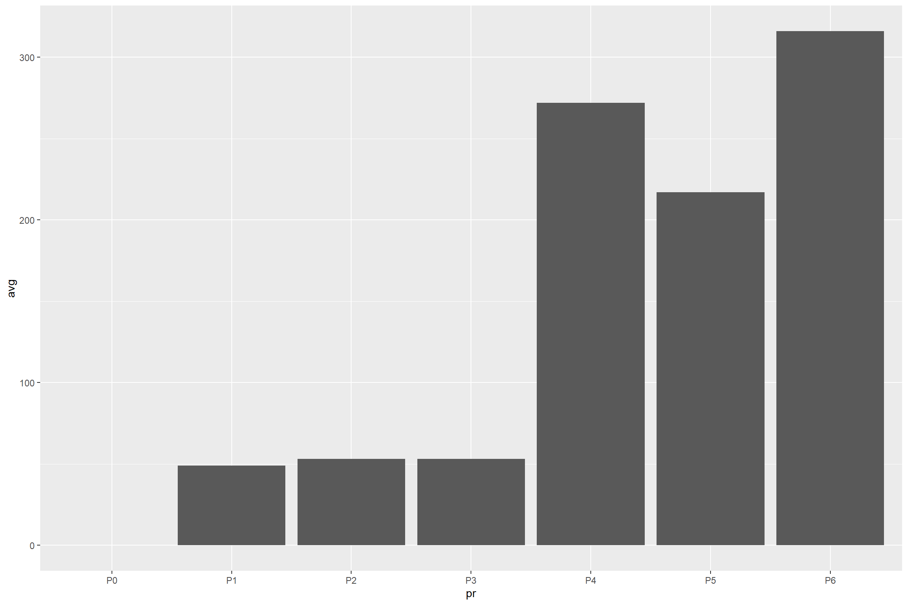

Assignments
Pre-lessons
Day 1: Short Answer
Please answer the following questions in the form of a short paragraph.
- What characteristics are shared by ‘good’ data visualizations?
- What skills are necessary for researchers to become good communicators?
- What tools do you typically use to create research reports and graphs and what are the strengths/weaknesses of those tools?
Day 2: Hands-on Visualization Part 1
Please read the following background information on promoters. Briefly, promoters are short sequences of DNA that influence the transcription of downstream sequences. A highly effective strong promoter will lead to more proteins while a weak promoter will lead to less protein.
Use the following information to create an appropriate plot to show promoter strength:
A bioengineer designed a study to evaluate the average strength of six different promoter sequences used to initiate transcription of a DNA open reading frame that results in a colorful protein in transformed E. coli bacteria. The cells were labeled as six different strains depending on their promoter variant: P1, P2, P3, P4, P5, and P6. An additional variant P0 was used as a promoter-less control. Cells were uniformly subjected to standard protocols for protein expression and measurement. Protein levels from each strain were measured in Miller Units over three trials. The P5 sample in Trial 2 was accidentally destroyed resulting in a measurement of NA (not available).
Note: Use your choice of software!
Data:
| Promoter | Trial 1 | Trial 2 | Trial 3 |
|---|---|---|---|
| P0 | 0 | 0 | 0 |
| P1 | 49 | 50 | 48 |
| P2 | 56 | 50 | 53 |
| P3 | 52 | 51 | 56 |
| P4 | 266 | 277 | 273 |
| P5 | 225 | NA | 209 |
| P6 | 306 | 326 | 316 |
Post-lessons
Day 1: Data Visualization Critique
Find a good example of a bad data visualization online and compose a short paragraph critiquing the visualization. What was good about it? What could be improved? Be sure to save the image and/or link along with your original paragraph.
Day 2: Hands-on Visualization Part 2
Create an improved plot of the same information using R. You should incorporate good information design and communication practices into your work.
You may use the following code or the Interactive Bar Plot to help you get started.
library(ggplot2)
library(dplyr)
#store the original measurements
pr<-c('P0','P1','P2','P3','P4','P5','P6')
t1<-c(0,49,56,52,266,225,306)
t2<-c(0,50,50,51,277,NA, 326)
t3<-c(0,48,53,56,273,209,316)
#combine the data into one tibble
dataMain<-tibble(pr,t1,t2,t3)
#re-store the data in a tibble containing the average across each row, removing the NA value where needed.
data<-dataMain %>% rowwise() %>% mutate(avg=mean(c(t1,t2,t3), na.rm=T))
#initialize the bar chart with ggplot2
bar<-ggplot(data, aes(x=pr, y=avg)) +
geom_bar(stat="identity")
#draw the plot
bar